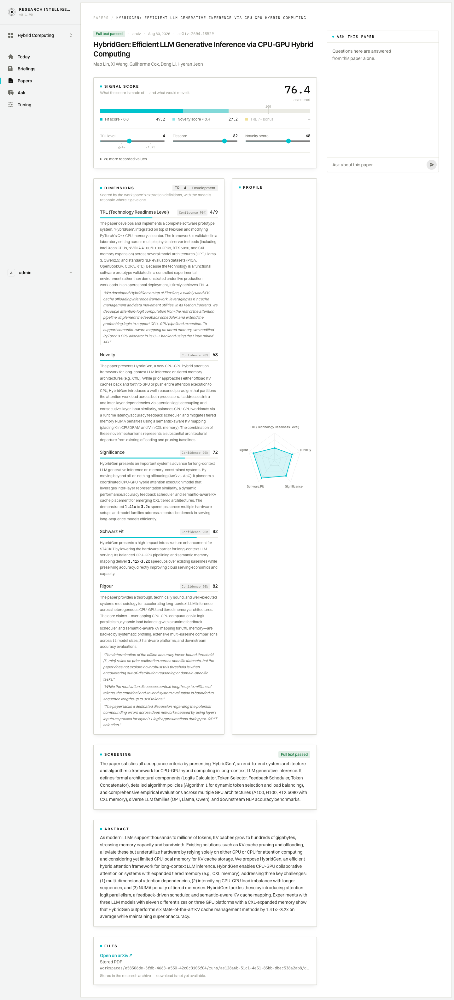
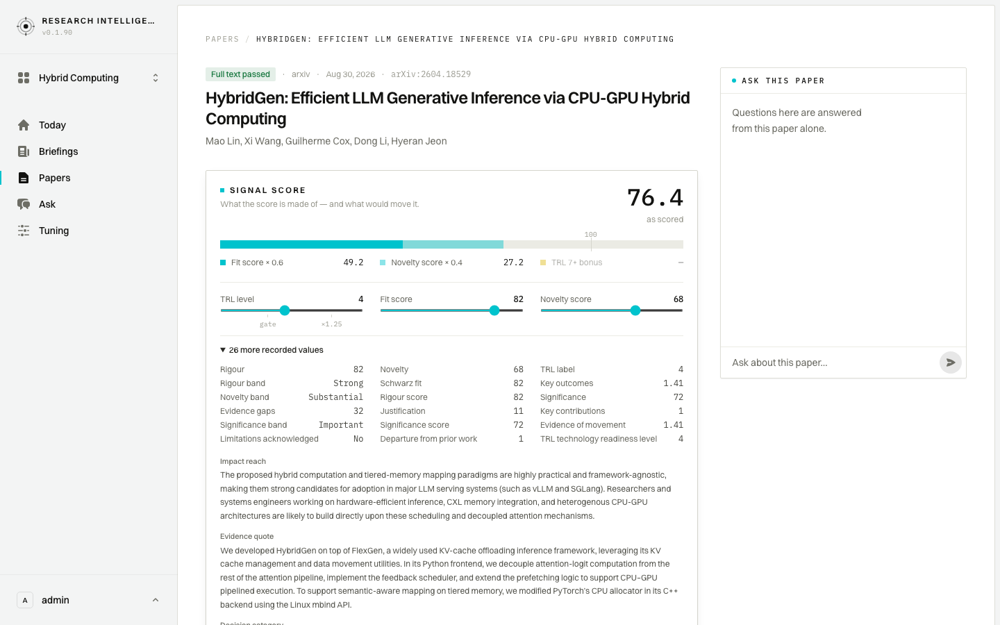
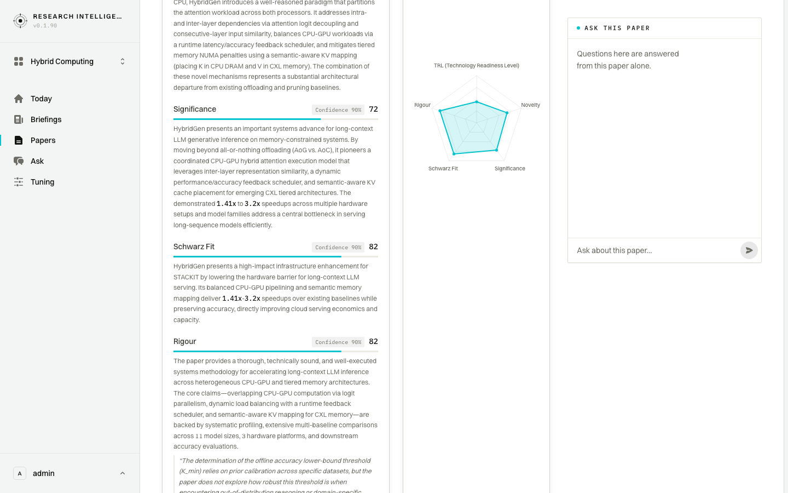
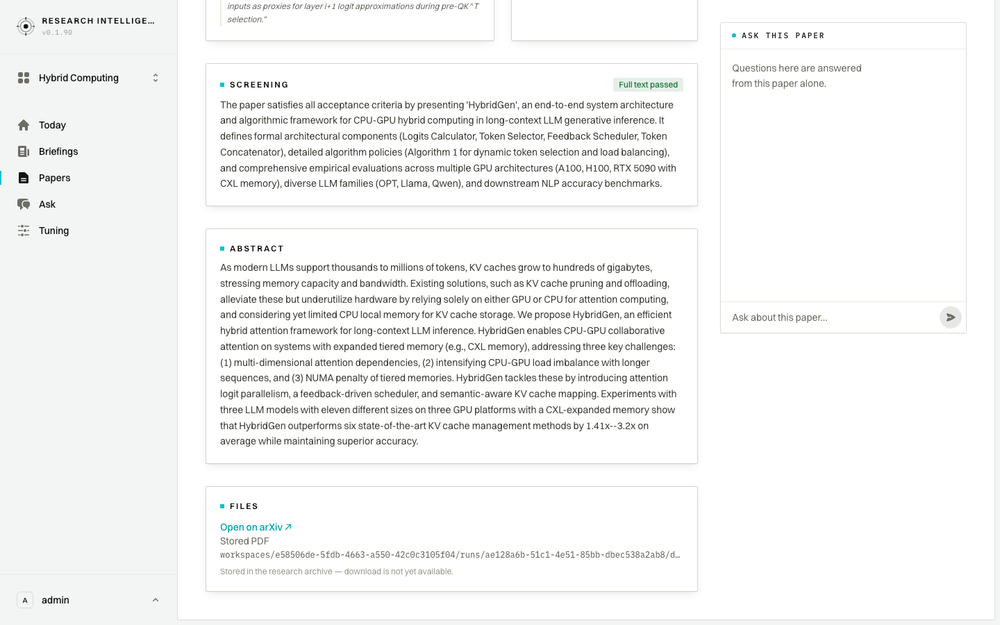
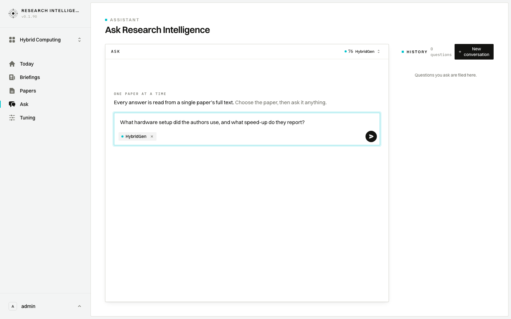
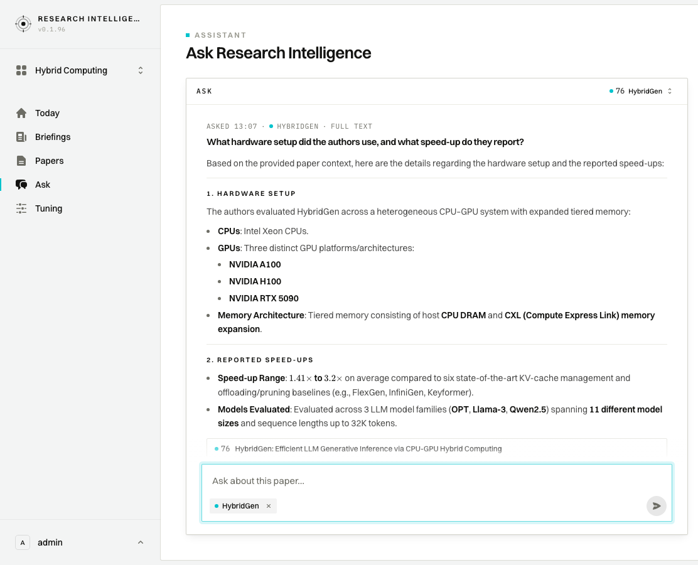

Domain expert
A protected hour with one paper: understand the score, read the evidence, interrogate the full text.
Wants a protected hour with one paper; argues with the reasoning, not the score
- The scorecard
- What the score is made of
- Dimensions, rationale and profile
- Screening, abstract and files
- Ask this paper
- The answer, with citations
1 · The scorecard

- Sees
- One paper on one page: HybridGen: Efficient LLM Generative Inference via CPU-GPU Hybrid Computing, an arXiv preprint from 30 August 2026 that passed full-text screening, scored 76.4. Under the score sit five scored dimensions with their reasoning, the screening decision, the abstract and the archived PDF.
- Does
- Reads the whole record once, top to bottom, without opening or clicking anything.
- Decides
- Worth the hour — every number on the page has words attached to it, so there is something to argue with rather than a verdict to accept.
2 · What the score is made of

Clip · 7 s — the recorded values opening out under the score
- Sees
- The 76.4 taken apart on one bar: a fit share, a smaller novelty share, and a readiness bonus this paper does not earn, over three values that can be moved in place — readiness level (TRL) 4, fit 82, novelty 68.
- Does
- Opens the 26 further recorded values behind the number: the rigour, novelty and significance bands, an evidence-gap figure, an impact-reach note, and the passage quoted from the paper.
- Decides
- The score is legible rather than opaque — readiness is what is holding it back, and readiness 4 is the right call for a lab prototype, so 76.4 stands.
3 · Dimensions, rationale and profile

- Sees
- Three of the five dimensions in view — significance 72, Schwarz Fit 82, rigour 82, each at 90% confidence and each followed by a paragraph of reasoning. Two of the three lean on the same measured result, a 1.41x–3.2x speed-up; the third argues from the breadth of the testing instead — 11 model sizes, 3 hardware platforms. The profile chart alongside names all five axes at once.
- Does
- Scrolls into the rationales and reads them against one another, checking whether the same claim is doing the work in every dimension.
- Decides
- The profile is lopsided in a way that makes sense — strong on fit and rigour, thin on readiness — and the reasoning leans on one measured result, which is the thing to test next.
4 · Screening, abstract and files

- Sees
- The screening decision in full — passed full-text screening, on the grounds that the paper defines a complete architecture and evaluates it across the A100, H100 and RTX 5090, and the OPT, Llama and Qwen families — then the abstract, and the stored PDF, held in the research archive but not yet downloadable.
- Does
- Reads the abstract last, against the rationales already read, and notes that the paper is public on arXiv.
- Decides
- Screening reason and abstract say the same thing, so the open questions are about the experiment itself, not about the summary.
5 · Ask this paper

- Sees
- The Ask console already pointed at HybridGen — the paper named at the head of the console beside its score of 76, and named again inside the question box — with one rule stated plainly: every answer is read from a single paper’s full text. The history beside it is empty.
- Does
- Follows the Ask panel on the paper page, which carries the paper across to the full Ask screen, then types the question the hour has been building to — what hardware setup did the authors use, and what speed-up do they report — without sending it yet.
- Decides
- The claim worth testing is the speed-up, and it is only worth repeating once the hardware it was measured on is named.
6 · The answer, with citations

Clip · 19 s — the question sent, then the answer arriving under it
- Sees
- The question at the head of the transcript, and under it the answer read out of the paper’s full text: a hardware section naming Intel Xeon processors with NVIDIA A100, H100 and RTX 5090 cards over tiered host memory and a CXL memory expansion, then a speed-up section giving 1.41x to 3.2x against six baselines, measured over three model families and eleven model sizes. At the foot of the answer sits the one source it points back to — the paper itself, named and carrying its score of 76.
- Does
- Sends the question and watches the answer arrive: first a reading note counting the seconds while the paper is read, then the answer building under it. Finishes at the foot, on what the answer points back to rather than on the prose.
- Decides
- The hardware is named and the speed-up is attributed to a stated baseline, so the figure is usable as it stands; the answer cites the paper rather than a page, so the exact figures are confirmed in the paper itself.
Caveats
- The question in step 5 is composed but not sent; step 6 is the only step where a question is actually asked and answered.
- The conversation history beside the Ask console is empty on the snapshot; on the live system it holds earlier threads, so it is out of frame in step 6.
- Step 1 shows the page with the 26 further recorded values still collapsed. Step 2 opens them, so the page is taller from step 2 onward.
- Step 3's frame holds the reasoning but not the evidence around it: the readiness quote sits above it, the rigour quotes are cut off at its foot, and the hardware behind the speed-ups — Intel Xeon CPUs, NVIDIA A100 and H100, RTX 5090 with CXL memory — is named only in the readiness rationale and in the screening reason, both outside the frame. Step 1's full-page still is where all three can be read.
- The answer in step 6 is written fresh each time the question is asked, so its wording, and whatever it points back to, will differ on another day. The question, the paper and the shape of the reply are what this step shows.
- The stored PDF is listed by its internal identifier; a download link is not offered yet.
- The fact-check line under the answer in step 6 sits just below the foot of the frame.
- Step 6 was recorded a few hours later than the rest, so small wording differences on the Ask screen are possible.